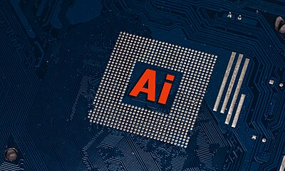
2026/4/5
Harness Engineering：如何讓 AI 固定產出高品質成果
光靠 prompt 已經不夠了。2025 年最重要的 AI 新概念，用你最熟悉的 AP 題庫解釋清楚。
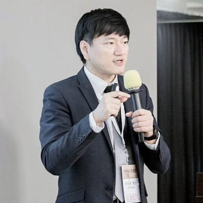
2026/4/5
蔡依橙 — 醫師、創業者、教育工作者
好奇心後面的那個人。延伸連結、聯絡方式，在這裡。
2026/4/5
美國商學院 MBA 選校指南
前 30 名商學院深度分析，含十大次專領域薪資地圖，M7 到廣泛佳選完整比較。台灣學生版。
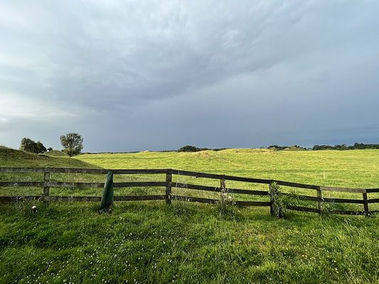
2026/4/5
進口長效乳完整解析：安佳為何比較濃？威斯蘭是中資？
安佳為什麼比較濃？威斯蘭竟然是中資？從梅納反應、均質化到中資背景，一次搞懂安佳、紐麥福、愛牧、威斯蘭、綠原。

2026/4/4
將來想做什麼？先看看世界的機會
各科系留美前景 × H-1B 機率 × 起薪比較。科系選擇比努力更重要。
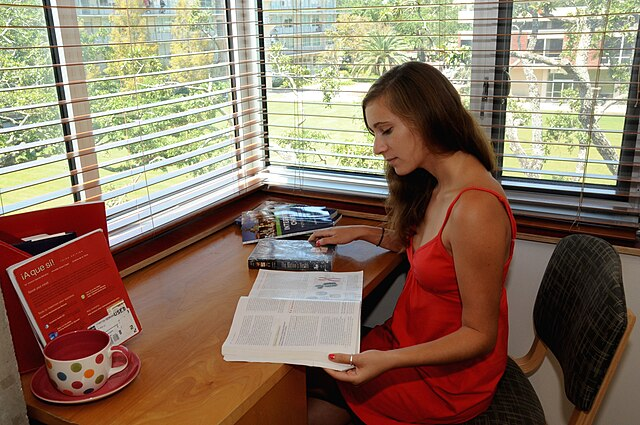
2026/4/3
SAT 閱讀衝 800 完全攻略
不是讀更多，是錯更少——數學強的你，轉換思維就能突破。
2026/4/3
美國理工名校新生完全指南
台灣國際學生入學前後完整攻略：簽證 I-20、宿舍、Meal Plan、選課策略、SSN、駕照考取，一頁搞定。
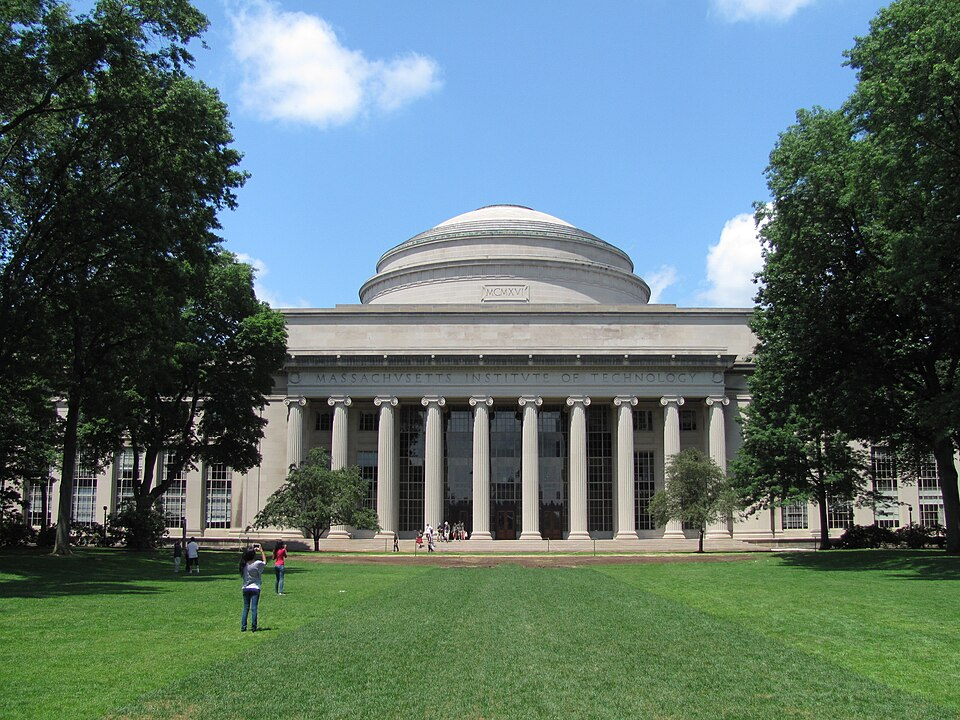
2026/4/3
美國大學工程排名前 30 選校指南
美國電機工程（Electrical Engineering）前 30 名大學的研究與整理。
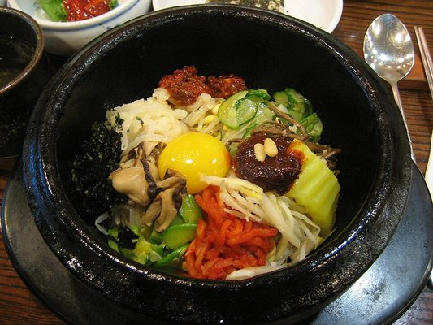
2026/4/2
拜託了冰箱｜打開冰箱的那 3 秒鐘
一個韓國綜藝節目，藏著關於限制、直覺與真正專業力的深層問題。

2026/4/2
世界史互動時間軸
支援縮放的互動式網頁，涵蓋世界重大時期、重大帝國、重大事件。
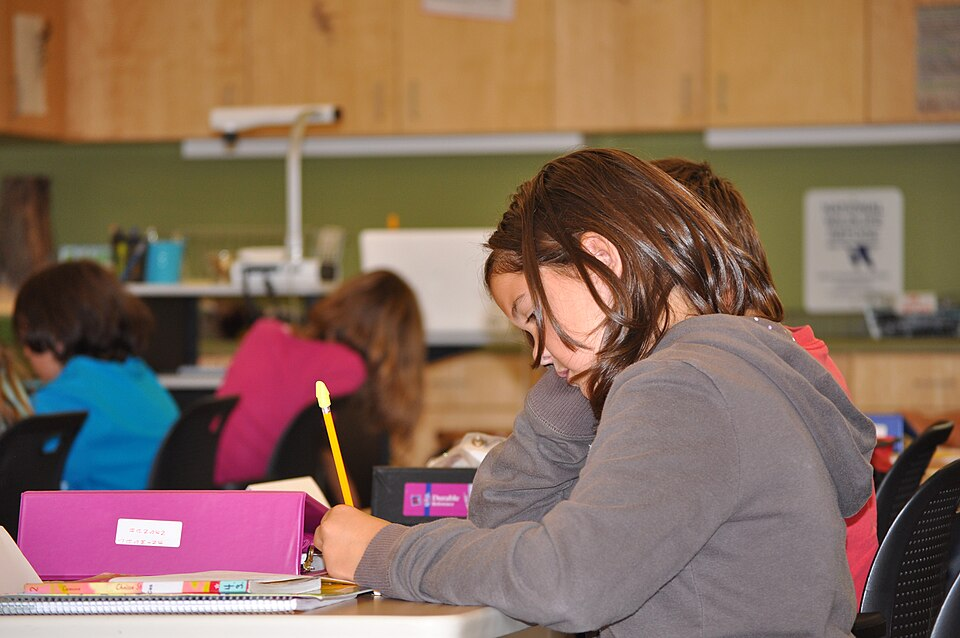
2026/4/2
蔡依橙觀點
測試型的實驗網站，老東西，練格式設計。

2026/4/2
AI 素養教育工作坊
測試活動網站版型，練練新格式。
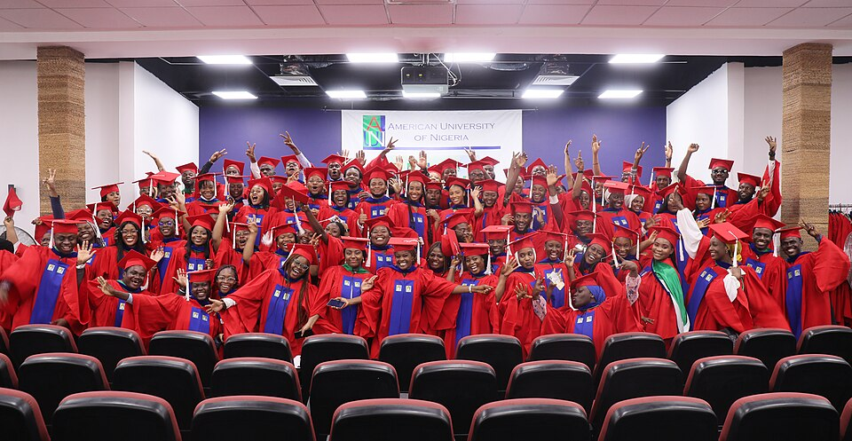
2026/3/30
J's 美國大學錄取結果｜工程排名比較
五所錄取校 vs 台大，USN / THE / QS 三大排名系統對照。
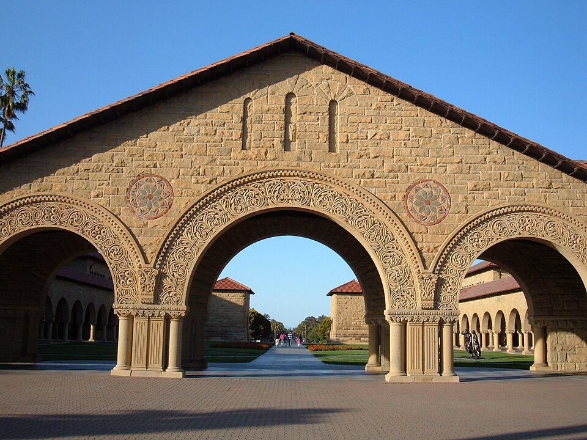
2026/4/1
留學申請觀察筆記
從一次完整申請季的結果，分析 Early vs Regular 的結構性差異，以及如何調整策略。
2026/4/1
Washington DC 深度旅遊指南
全世界最密集的博物館群，近代史紀念館，自然、航太、歷史全部免費。走路就能完成的文化深度遊。
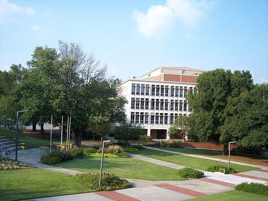
2026/3/31
頂尖理工大學備取完全攻略
美國頂尖理工校 Waitlist 怎麼運作？歷年錄取率、決策時間軸、該做什麼不該做什麼，一頁說清楚。
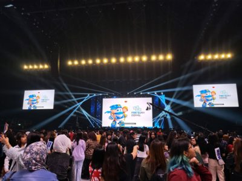
2026/3/26
K-POP 四大經紀公司｜誰賺最多？誰的藝人最幸福？
SM、YG、JYP、HYBE——分潤結構、練習生人權、創辦人接班、粉絲經濟全解析。
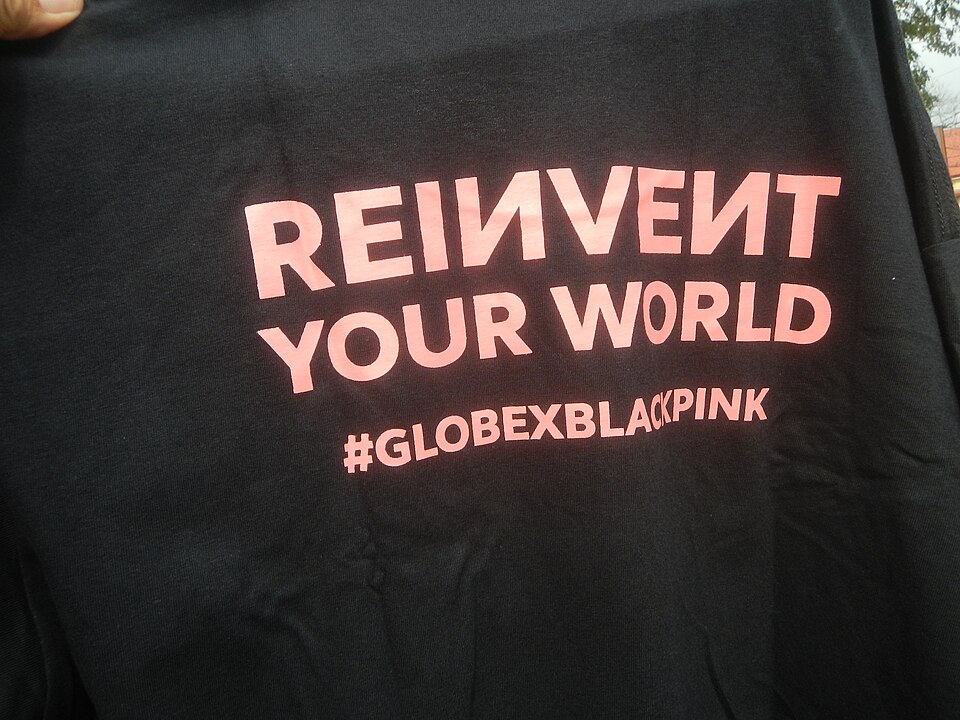
2026/3/26
認識 BLACKPINK｜商業模式與合約策略全解析
四個人如何改寫 K-pop 的商業規則——從練習生到精品代言人。
2026/3/26
Anthropic 深度研究：Claude 為何能殺出血路？
從 OpenAI 出走的 11 人，如何用「安全優先」打造史上最快企業軟體公司。
2026/3/26
深入了解 aespa｜從練習生到舞台背後的真實故事
十億美元併購案、Supernova 神曲、過勞真相——給粉絲的商業世界入門讀物。
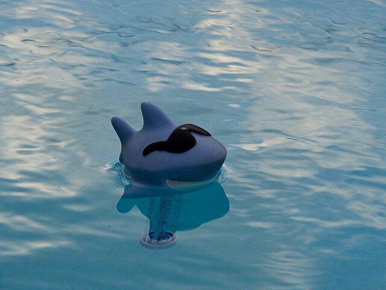
2026/3/25
胖鯊魚鯊西米｜情報整理
台灣 LINE 貼圖 IP 的商業分析。從分潤機制到收入天花板，給國中生的研究入門。
2026/3/25
Sam Altman 背景研究
搭配《The Optimist》閱讀，整理 Sam Altman 的人生時間軸、創業歷程與爭議事件。
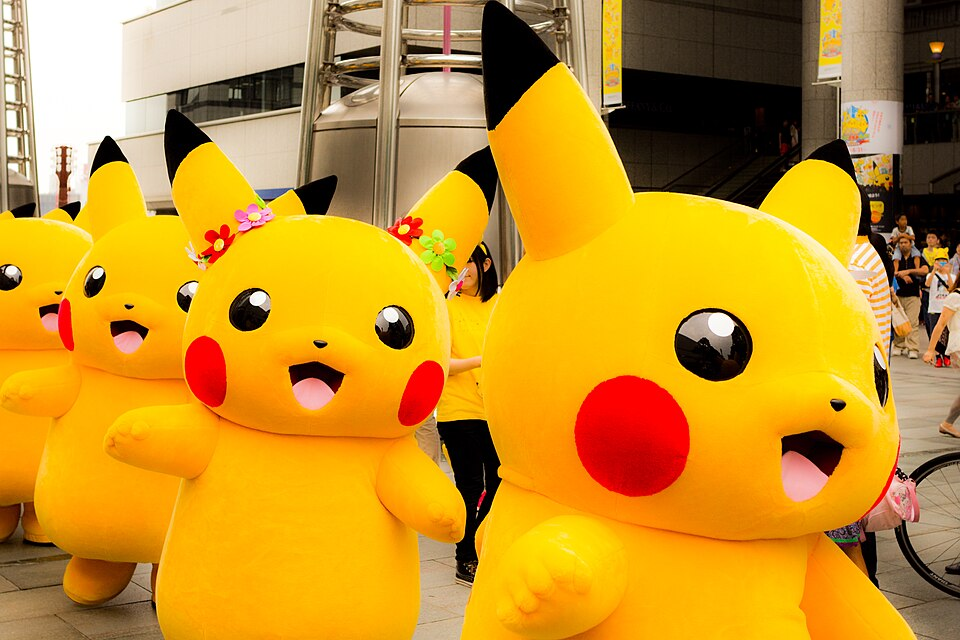
2026/3/23
蔥盟寶可夢圖鑑
電龍、小火龍、傑尼龜、胖丁的互動式圖鑑網頁。蔥盟知名寶可夢大集合。